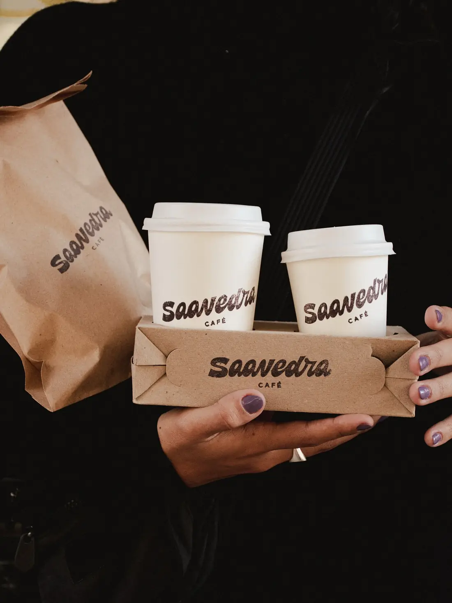
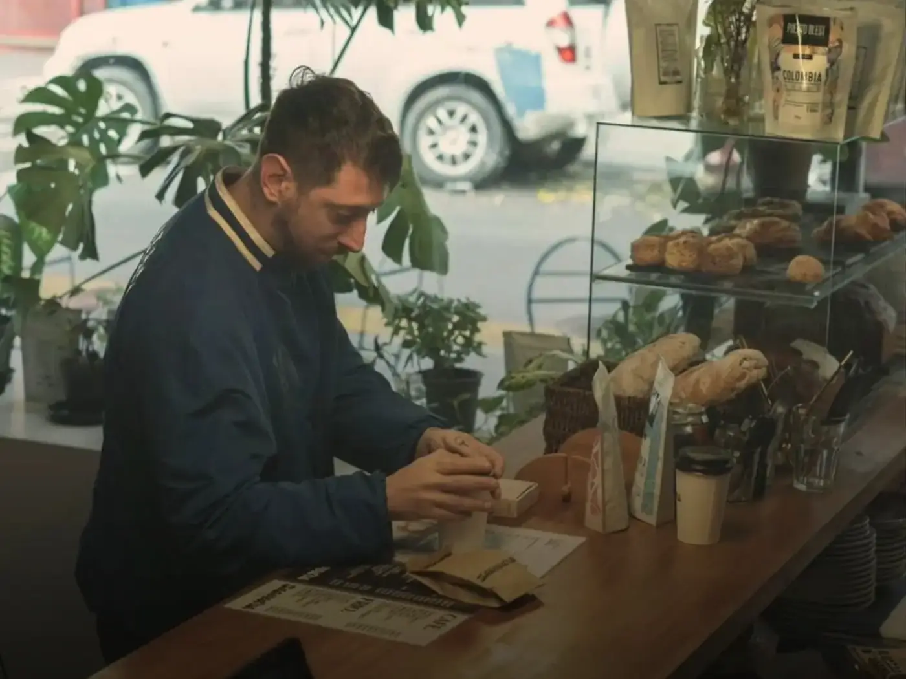
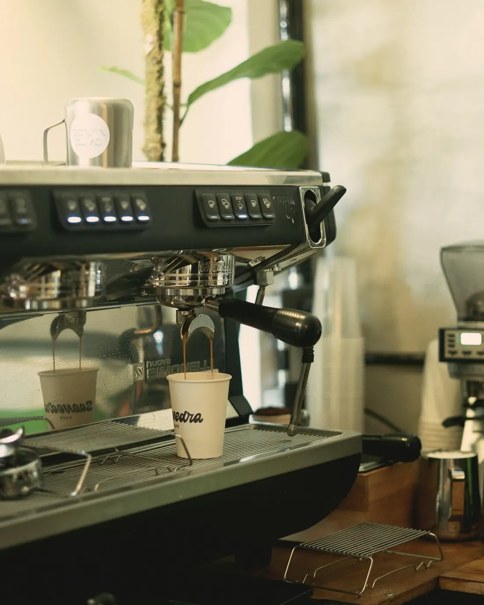
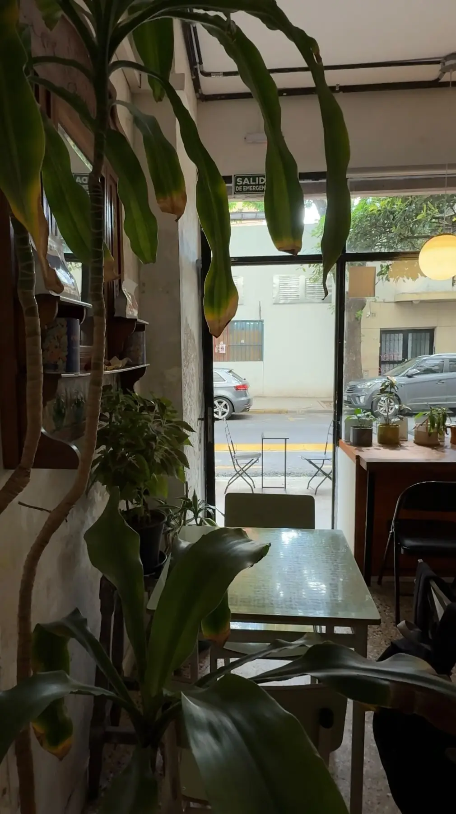
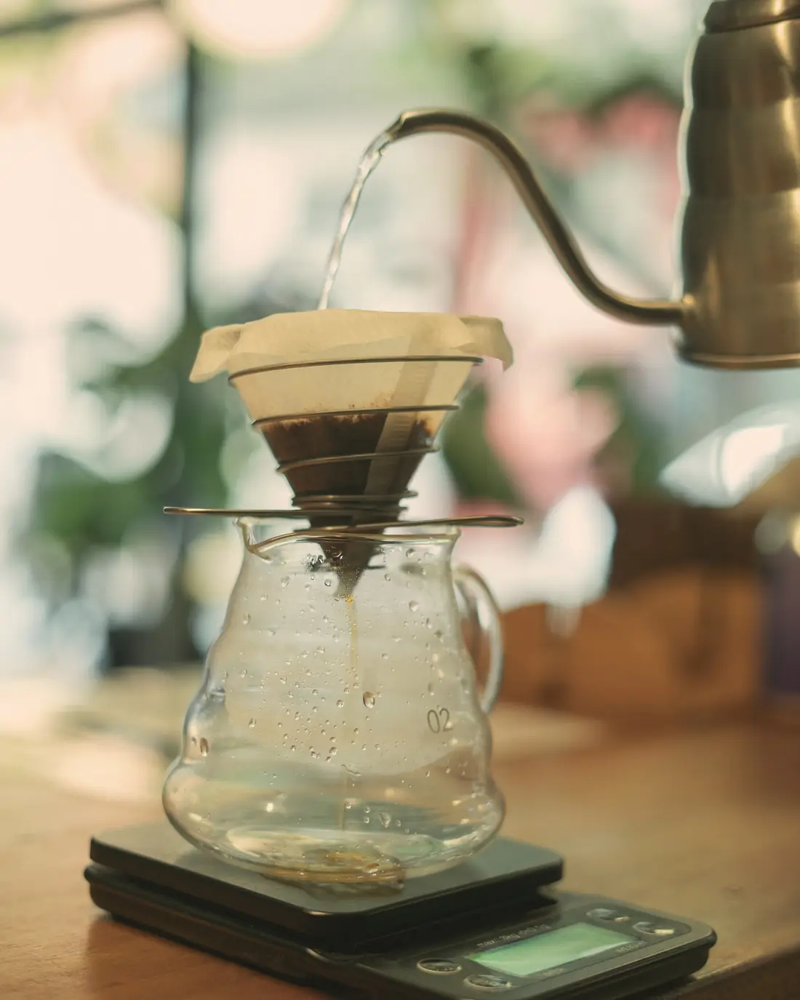
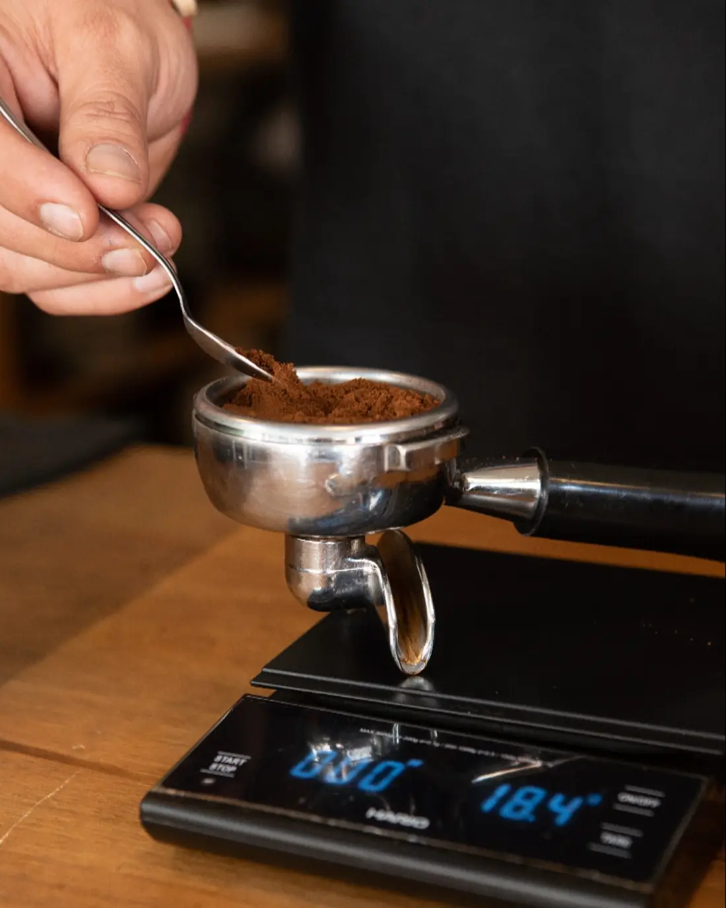
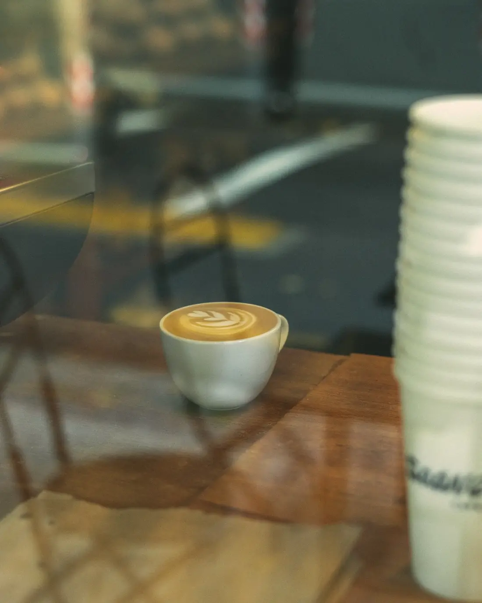
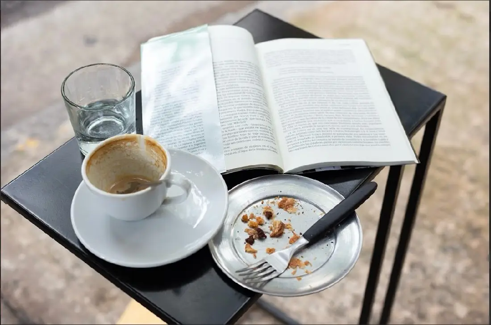
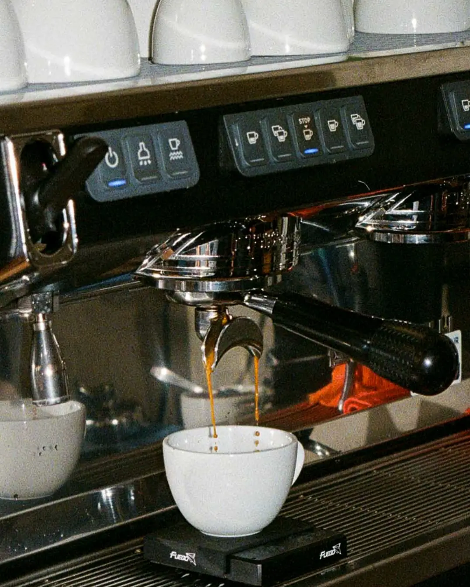
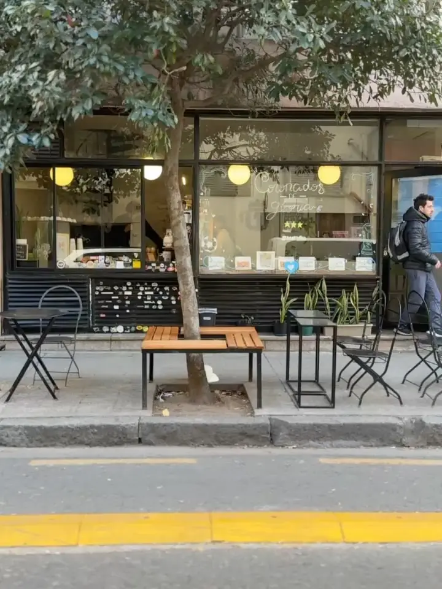

Café de especialidad en serio.
Filtrados de la semana, espresso y pastelería propia en Amenábar 3668. Tomalo en la vereda o llevalo en tu bolsita.
Lun a vie 8:00 a 20:00 hs · Sáb, dom y feriados 9:00 a 20:00 hs

Desde marzo de 2024 · Amenábar 3668
Entre los mejores cafés del país.
Saavedra Café está entre los nominados a The Best Coffee Shops Argentina 2026. Un café de barrio con foco en lo técnico: filtrados que cambian cada semana, espresso bien sacado y pastelería propia.
4,8327 reseñas en GoogleCarta.
Se actualiza desde el panel del local. Ver la carta del QR →
Filtrados de la semana.
Los granos que están en la barra, para llevar a tu casa. Tocá una bolsa y date vuelta la etiqueta.
Esta semana: Colombia · Puerto Blest
La receta.
Hacé en tu casa un V60 como en la barra. Elegí cuánto café vas a usar y te decimos el agua, los tiempos y cada vertido.
Receta de referencia para un V60. En la barra te pasamos la del grano de la semana.
Para llevar y regalar.
Pedilo desde acá y pasalo a buscar: tu café, la pastelería, los granos o una cajita armada para regalar.
- 1
Sumá a tu bolsita
De la carta, del estante de granos o las cajitas.
- 2
Elegí a qué hora pasás
Lo antes posible o a una hora de hoy. Las cajitas, con un día de anticipación.
- 3
Retirás en Amenábar 3668
Pagás en el local o con Mercado Pago.
El lugar.
Barra de madera, plantas, la máquina siempre andando y la vereda con árbol sobre Amenábar.








Cómo llegar.
Amenábar 3668
Saavedra, CABA · a pasos de Núñez
Lun a vie 8:00 a 20:00 hs
- Lunes a viernes8:00 a 20:00 hs
- Sábados, domingos y feriados9:00 a 20:00 hs
